Vegetarian Flavors Across Continents
Slate & Saffron
Food from six continents. Written like a friend would.
01 · From the kitchen
Contents
The Menu
Six dishes the whole table asks for. Turn the page.
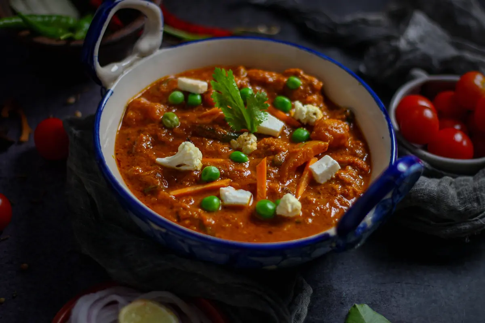
Matar Paneer
Hari matar aur paneer, tamatar-pyaaz ki chatpati gravy mein.
35 min · Easy · India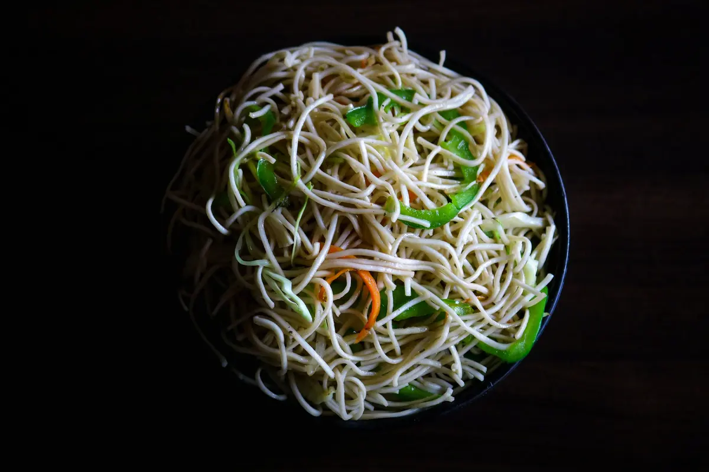
Vegetable Pad Thai
Thailand ke khatte-meethe, moongfali wale rice noodles.
25 min · Medium · Thailand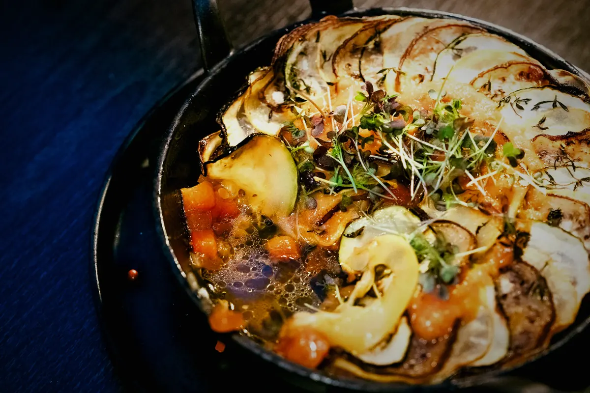
Ratatouille
Garmiyon ki sabziyon ki rangeen French dish.
60 min · Medium · France
Vegetarian Tacos
Masaledar chane aur nimbu ke saath naram tortilla.
25 min · Easy · Mexico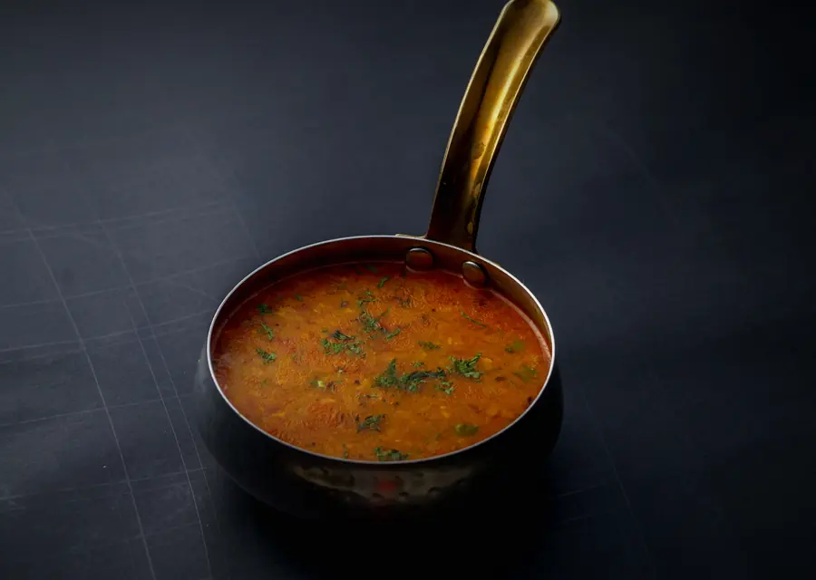
Dal Tadka
Ghee ke garam tadke wali sukoon bhari peeli dal.
30 min · Easy · India
Your table is next.
159 vegetarian recipes from six continents are waiting in the book.
Open the recipe book
02 · Our story
One kitchen, six continents.
We collect vegetarian dishes from around the world and write them simply, with a desi swap for anything hard to find at home.
Check what's in your fridge →03 · Pick by mood
What are you in the mood for?
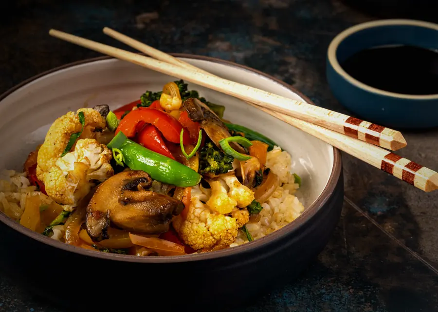
01Quick in 20 MinutesDinner on the table before the chai cools.8 recipes →02Comfort FoodWarm bowls for slow evenings.50 recipes →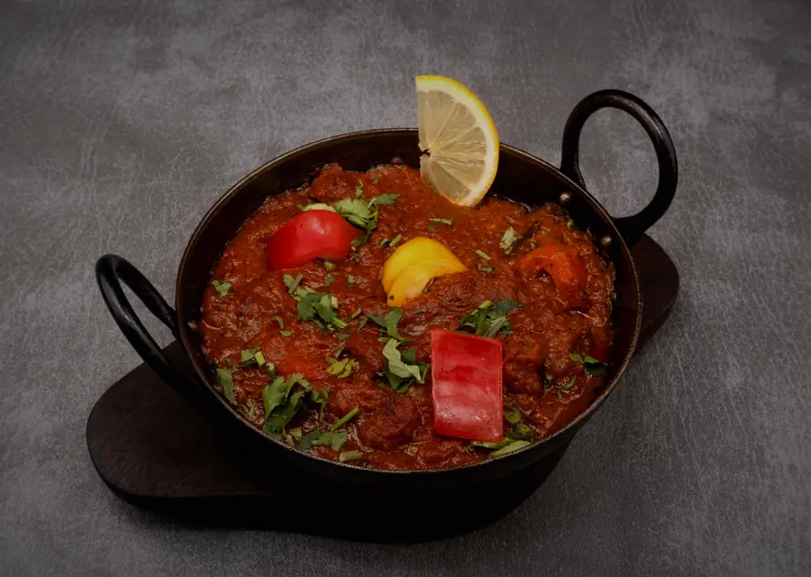
03Spicy & BoldChilli, smoke and a little drama.11 recipes →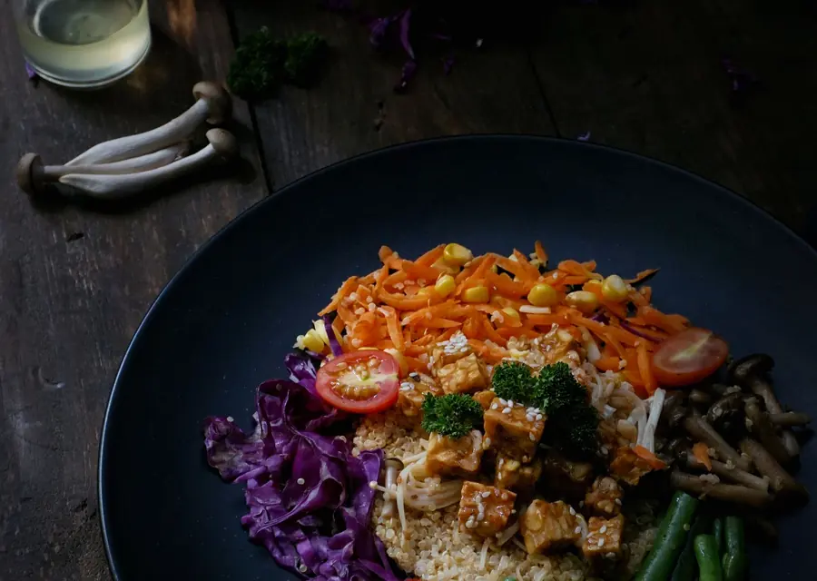
04Healthy & LightFresh, bright and easy on the stomach.17 recipes →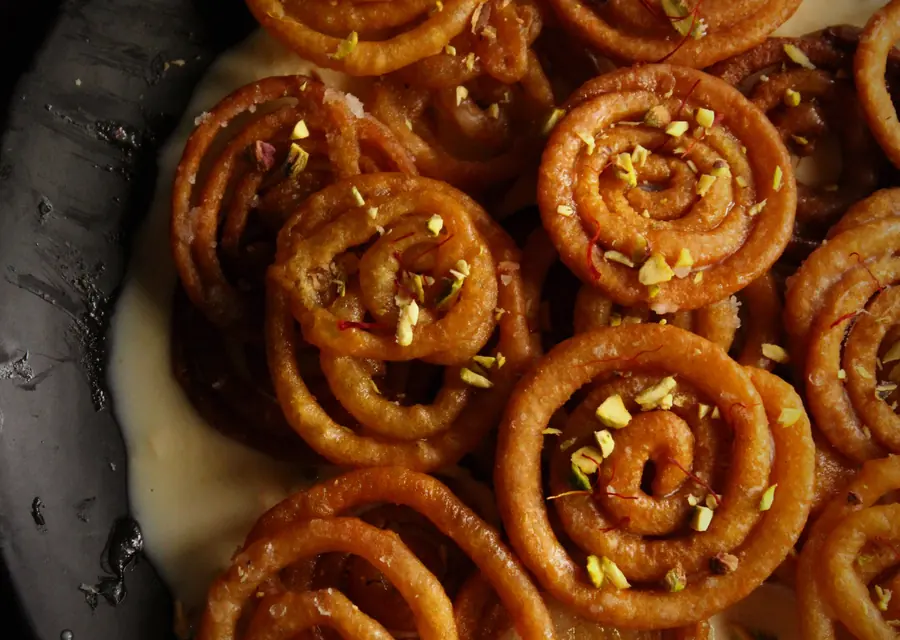
05Festive FavouritesDishes worth cooking for a crowd.17 recipes →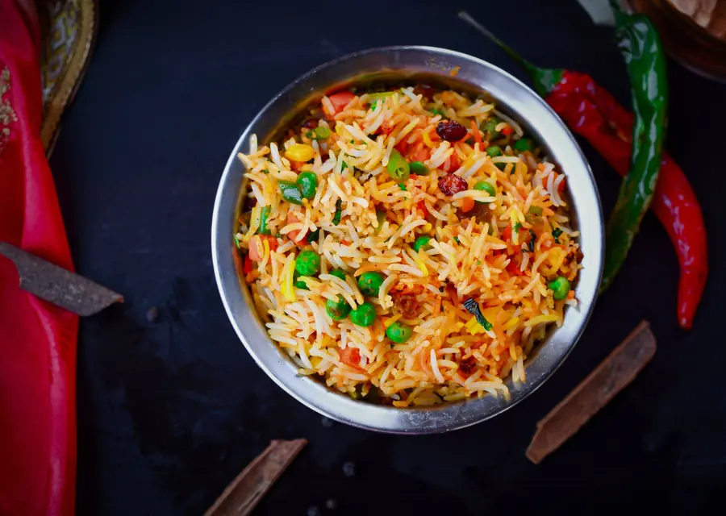
06One-Pot MealsOne pan, less washing up.39 recipes →04 · Explore by continent
Six continents
 AsiaSaffron, smoke and street stalls59 recipes →
AsiaSaffron, smoke and street stalls59 recipes → EuropeTomatoes, herbs and slow lunches20 recipes →
EuropeTomatoes, herbs and slow lunches20 recipes → AfricaClay pots and bold red spice20 recipes →North AmericaTacos, corn and maple mornings20 recipes →
AfricaClay pots and bold red spice20 recipes →North AmericaTacos, corn and maple mornings20 recipes → South AmericaCorn, beans and Andean grains20 recipes →
South AmericaCorn, beans and Andean grains20 recipes → Australia & IslandsSunlit coasts, tropical roots and island fire20 recipes →
Australia & IslandsSunlit coasts, tropical roots and island fire20 recipes →59 vegetarian recipes
Asia
Dals, paneer curries, dosas and street food from India, plus noodles, momos and rolls from across Asia.
See all 59 recipes Paneer Butter Masala35 min · MediumView Recipe
Paneer Butter Masala35 min · MediumView Recipe Masala Dosa40 min · HardView Recipe
Masala Dosa40 min · HardView Recipe Veg Momos50 min · HardView Recipe
Veg Momos50 min · HardView RecipeMore from Asia


20 vegetarian recipes
Europe
Pasta, risotto, slow-baked vegetables and cheesy comfort from Italy, France, Spain, Greece and beyond.
See all 20 recipes Margherita Pizza40 min · MediumView Recipe
Margherita Pizza40 min · MediumView Recipe Ratatouille60 min · MediumView Recipe
Ratatouille60 min · MediumView Recipe Mushroom Risotto45 min · MediumView Recipe
Mushroom Risotto45 min · MediumView RecipeMore from Europe


20 vegetarian recipes
Africa
Clay-pot stews, chickpea dishes and bold red spice from Morocco, Egypt, Ethiopia, Nigeria and more.
See all 20 recipes Koshari50 min · MediumView Recipe
Koshari50 min · MediumView Recipe Moroccan Vegetable Tagine60 min · MediumView Recipe
Moroccan Vegetable Tagine60 min · MediumView Recipe Nigerian Vegetable Jollof Rice50 min · MediumView Recipe
Nigerian Vegetable Jollof Rice50 min · MediumView RecipeMore from Africa


20 vegetarian recipes
North America
Tacos, corn, beans and maple from Mexico, the USA, Canada and the Caribbean, all without meat.
See all 20 recipes Vegetarian Tacos25 min · EasyView Recipe
Vegetarian Tacos25 min · EasyView Recipe Vegetarian Enchiladas50 min · MediumView Recipe
Vegetarian Enchiladas50 min · MediumView Recipe Veggie Burger with Sweet Potato Fries50 min · MediumView Recipe
Veggie Burger with Sweet Potato Fries50 min · MediumView RecipeMore from North America


20 vegetarian recipes
South America
Corn, beans, potatoes and cheese breads from Brazil, Peru, Argentina, Colombia and the Andes.
See all 20 recipes Arepas with Black Beans and Cheese30 min · MediumView Recipe
Arepas with Black Beans and Cheese30 min · MediumView Recipe Pao de Queijo45 min · MediumView Recipe
Pao de Queijo45 min · MediumView Recipe Acai Bowl10 min · EasyView Recipe
Acai Bowl10 min · EasyView RecipeMore from South America


20 vegetarian recipes
Australia & Islands
Sunny brunches, pies and island roots from Australia, New Zealand, Fiji, Samoa and Vanuatu.
See all 20 recipes Smashed Avocado Toast10 min · EasyView Recipe
Smashed Avocado Toast10 min · EasyView Recipe Halloumi Burger25 min · EasyView Recipe
Halloumi Burger25 min · EasyView Recipe Mushroom Pie60 min · MediumView Recipe
Mushroom Pie60 min · MediumView RecipeMore from Australia & Islands


05 · Indian kitchen
52 Indian dishes, region by region
Dals, parathas, dosas, dhoklas and street food. Pick a region and cook.
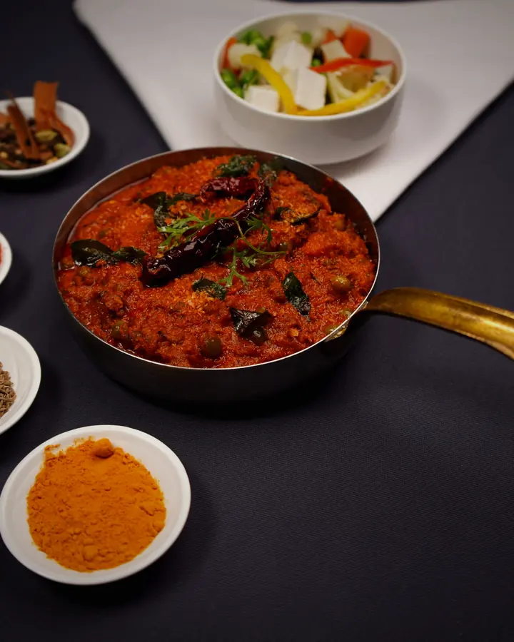
North IndianPaneer, dal and rich gravies30 dishes →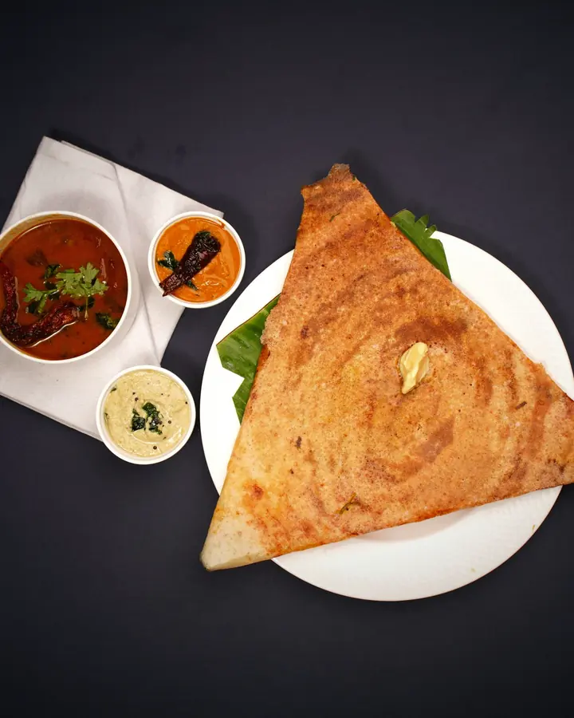
South IndianDosa, idli and sambar9 dishes →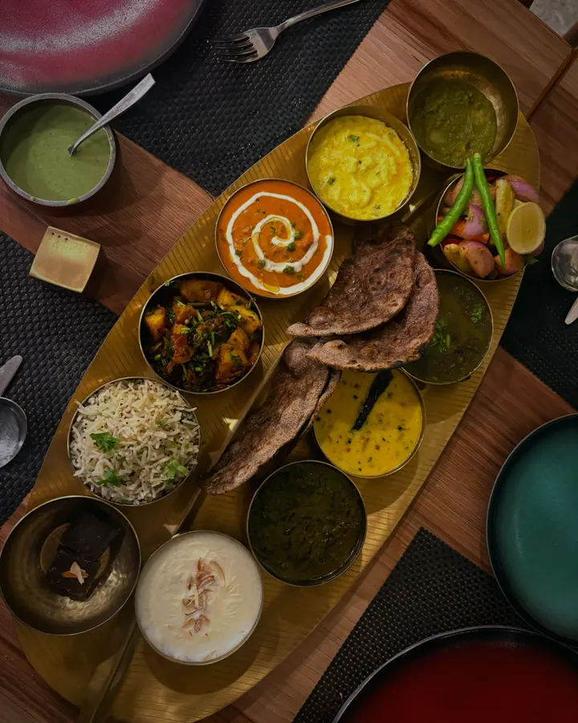
GujaratiThalis, dhokla and undhiyu5 dishes →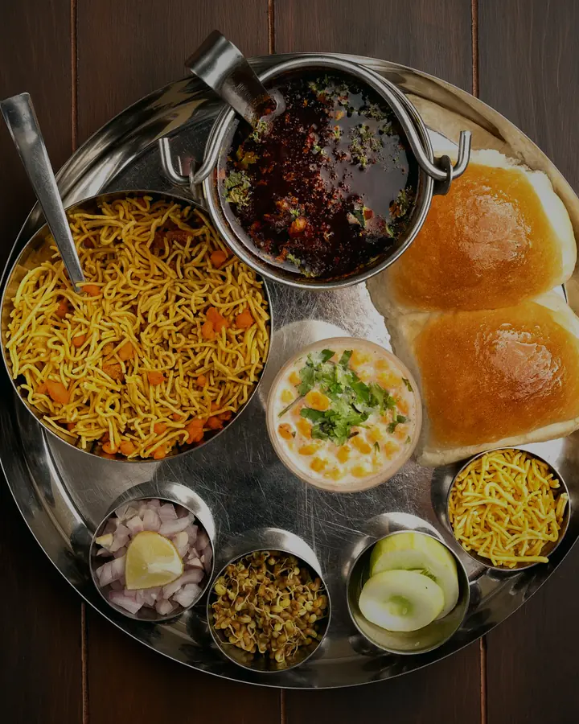
MaharashtrianMisal, pav and street spice5 dishes →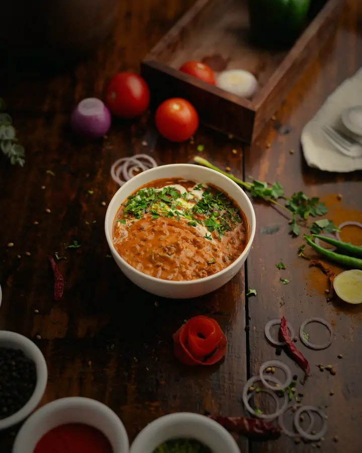
RajasthaniDal, gatte and desert flavours2 dishes →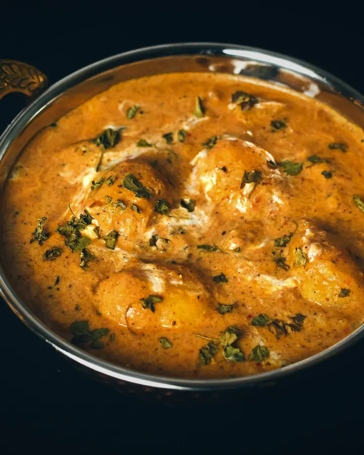
BengaliPotato, poppy seed and mustard2 dishes →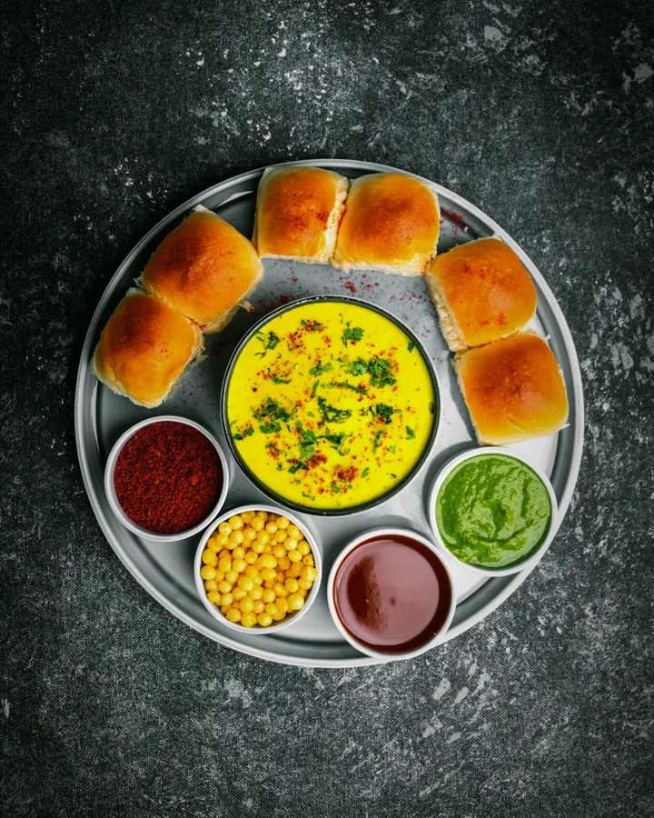
Street FoodChaat, pav and late-night snacks5 dishes →06 · Seasonal collections
Cook with the season


08 · Tonight
What's in your fridge?
Tap what you have. We show what you can cook right now.
Open the fridge →